<main id="fondo" class="container-fluid min-vh-100">
    <div class="row">
        <!--**************************************MENU***************************************-->
        <div id="menu" class="col-12 col-lg-2 pr-0 bg-light border-right">
            <app-menu></app-menu>
        </div>
        <!--***********************************CONTENIDO***************************************-->
        <div id="contenido" class="col-12 col-lg-10 overflow-hidden mt-4">
            <!--Enlace botones-->
            <div class="mb-3">
                <button type="button" routerLink="/docMaria" class="btn btn-primary mx-1">María</button>
                <button type="button" routerLink="/docDaniel" class="btn btn-primary mx-1">Daniel</button>
                <button type="button" routerLink="/docLuis" class="btn btn-primary mx-1">Luis</button>
            </div>
            <!--MANUAL DE USUARIO-->
            <div class="row">
                <div class="col-12">
                    <h1>Manual de usuario</h1>
                    <p>Aquí encontrarás toda la información necasaria para utilizar la aplicación en su totalidad. Sigue el índice para ver las distintas partes.</p>
                    <br>
                    <h2>1. Administración</h2>
                    <h3>&nbsp;&nbsp;1.1 Primeros pasos</h3>
                    <h4>&nbsp;&nbsp;&nbsp;&nbsp;&nbsp;1.1.1 Importar datos</h4>
                    <p class="ml-5">
                        Lo primero que debes hacer para utilizar la aplicación es importar los datos de los profesores y alumnos del centro. El primer paso es ir a la sección "Admin" en la parte izquierda de la página y luego a "Importar datos", en la parte superior.
                        <br>
                        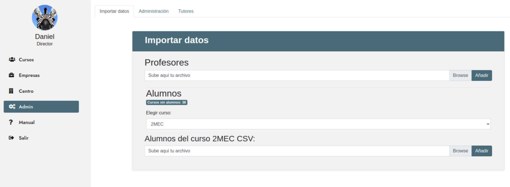
                        <br>
                        <b>Profesores:</b> Sube tu archivo CSV en la sección "Profesores" y haz click en "Añadir".
                        <br>
                        <b>Alumnos: </b> Selecciona el curso al que añadir los alumnos, carga su archivo CSV y haz click en "Añadir" en la sección de Alumnos.
                    </p>
                    <h4>&nbsp;&nbsp;&nbsp;&nbsp;&nbsp;1.1.2 Administrar cuentas de usuario</h4>
                    <p class="ml-5">
                        Las cuentas de usuario están pensadas para ser utilizadas por el tutor de un curso o bien por el director del centro.
                        <br> Para empezar, ve a la sección "Admin" y luego haz click en "Administración", en el panel superior. Aquí verás dos apartados: <b>Cuentas inactivas</b> y <b>Cuentas activas</b>.
                        <br>
                        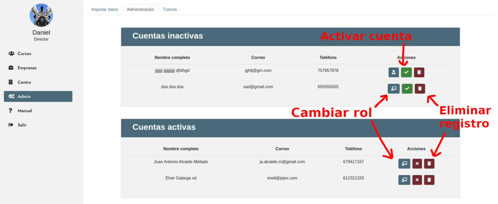
                        <br> -En la sección <b>Cuentas inactivas</b> están los usuarios que han creado su cuenta pero ésta no ha sido activada. Para <b>activar</b> una cuenta de usuario, haz click en el botón verde en la fila del usuario que desees. Con
                        el botón rojo puedes eliminar el registro y, por último, con el botón azul puedes cambiar el <b>rol</b> del usuario registrado: a <i>jefe de estudios</i> o <i>tutor</i>.
                    </p>
                    <h4>&nbsp;&nbsp;&nbsp;&nbsp;&nbsp;1.1.3 Asignar tutores a un curso</h4>
                    <p class="ml-5">
                        Ya tenemos los cursos, profesores y usuarios en la aplicación. Para que todo funcione sólo falta asignar tutores a un curso.
                        <br> Para ésto ve a la sección "Admin" en el panel izquierdo y luego a "Tutores", en el panel superior.
                        <br>
                        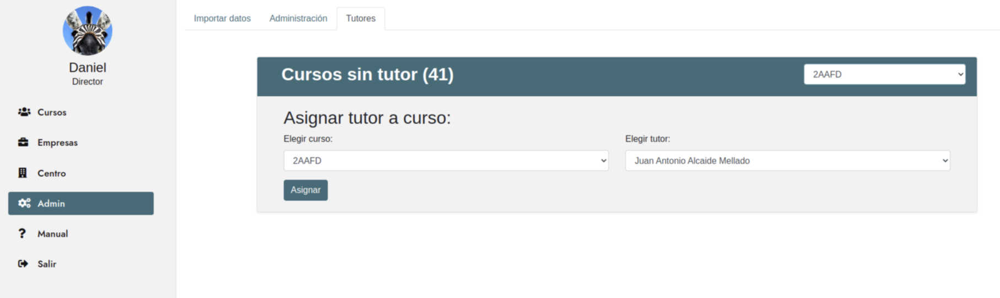
                        <br> Simplemente escoge el curso en el desplegable bajo "Elegir curso:", escoge el tutor en el desplegable bajo "Elegir tutor:" y haz click en "Asignar".
                    </p>
                    <h4>&nbsp;&nbsp;&nbsp;&nbsp;&nbsp;1.1.4 Editar información del centro</h4>
                    <p class="ml-5">
                        Conviene tener permanentemente actualizada la información del centro. Para verla, haz click en "Centro", en el menú de la izquierda. Ahora ves toda la información del centro en la Base de Datos. Para editar la información, haz click en "Editar".
                        <br>
                        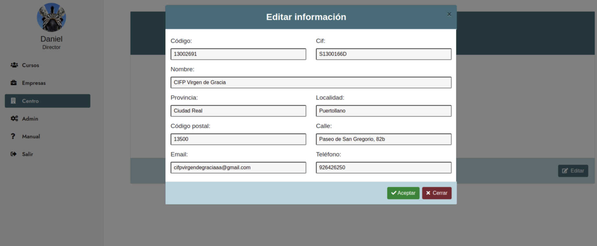
                        <br>Cambia los valores que desees y haz click en "Guardar".
                    </p>
                    <h3>&nbsp;&nbsp;1.2 Administrar cursos</h3>
                    <p class="ml-5">Para acceder a todas las funcionalidades relativas a los cursos, haz click en la sección "Cursos" en la parte izquierda de la aplicación.</p>
                    <h4>&nbsp;&nbsp;&nbsp;&nbsp;&nbsp;1.2.1 Crear un curso</h4>
                    <p class="ml-5">
                        Haz click en "Nuevo curso" en la parte superior de la pantalla. Se le abrirá un formulario que debe rellenar con los datos del curso a crear. Haz click en "Añadir".
                        <br>
                        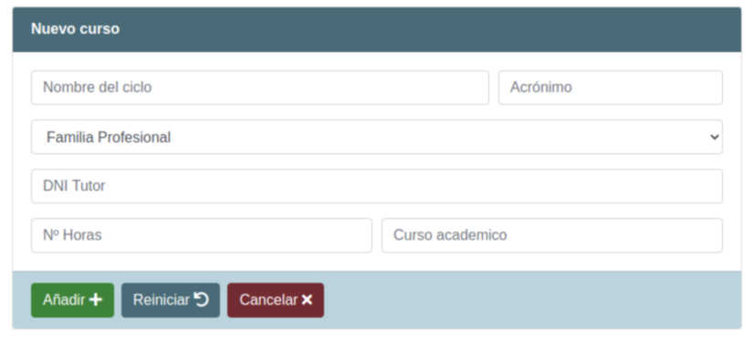
                    </p>
                    <h4>&nbsp;&nbsp;&nbsp;&nbsp;&nbsp;1.2.2 Editar o eliminar un curso</h4>
                    <p class="ml-5">
                        En la sección "Cursos", selecciona el curso que deseas editar en el desplegable de la parte superior. Hecho esto, haz click en el botón azul que aparece debajo del nombre del curso, en la parte de la derecha.
                        <br>
                        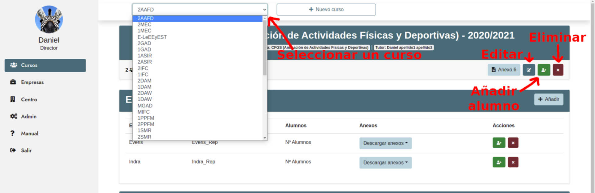
                        <br> Aparecerá un formulario con los datos de ese curso. Cambia lo que desees y haz click en "Modificar".
                    </p>
                    <h4>&nbsp;&nbsp;&nbsp;&nbsp;&nbsp;1.2.3 Añadir alumnos a un curso</h4>
                    <p class="ml-5">
                        Una vez seleccionado el curso, haz click en el botón verde para añadir alumnos (ver imagen anterior). Aparecerá un formulario. Rellénalo con los datos del nuevo alumno a incluir y haz click en "Añadir".
                    </p>
                    <h4>&nbsp;&nbsp;&nbsp;&nbsp;&nbsp;1.2.4 Editar o eliminar alumnos de un curso</h4>
                    <p class="ml-5">
                        En la parte inferior de la sección "Cursos" aparecerán los alumnos asignados a ese curso junto con una foto y varias opciones:
                        <br>
                        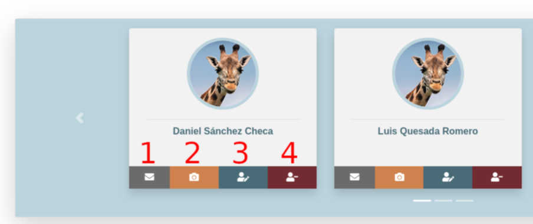
                        <br><b>Primera:</b> Mandar correo. Se abrirá la aplicación de correo por defecto del sistema preparado para mandar un correo al alumno.
                        <br><b>Segunda:</b> Cambiar foto. Dará la opción de subir una imagen del alumno.
                        <br><b>Tercera:</b> Editar alumno. Aparecerá un formulario con los datos del alumno para poder modificarlos.
                        <br><b>Cuarta:</b> Eliminar alumno. Elimina el alumno de la base de datos.
                    </p>
                    <h3>&nbsp;&nbsp;1.3 Administrar empresas</h3>
                    <p class="ml-5">Para acceder a todas las funcionalidades relativas a las empresas, haz click en la sección "Empresas" en la parte izquierda de la aplicación.</p>
                    <h4>&nbsp;&nbsp;&nbsp;&nbsp;&nbsp;1.3.1 Añadir una empresa</h4>
                    <p class="ml-5">En la sección de Empresas, haz click en "Añadir empresa", en la parte superior de la pantalla. Aparecerá un formulario con los datos requeridos sobre una empresa. Rellénalo y haz click en "Guardar".
                        <br>
                        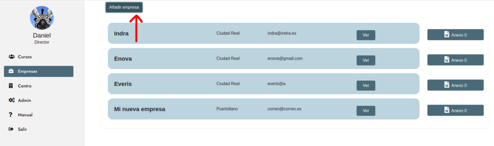
                        <br>
                    </p>
                    <h4>&nbsp;&nbsp;&nbsp;&nbsp;&nbsp;1.3.2 Editar o eliminar una empresa</h4>
                    <p class="ml-5">
                        En la sección "Empresas", haz click en el botón "Ver" junto a la empresa de la que desees ver detalles, editar o eliminar.
                        <br>
                        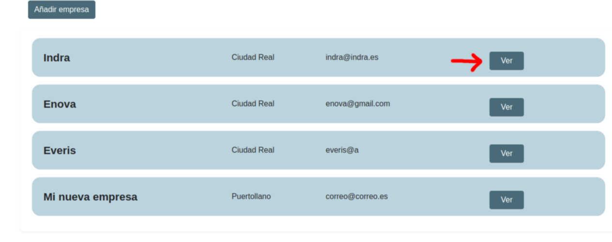
                        <br> Aparecerá una ventana con los datos de esa empresa. En la parte de abajo, a la derecha, tendrás las opciones <b>Editar</b> o <b>Eliminar</b>.
                        <br>
                        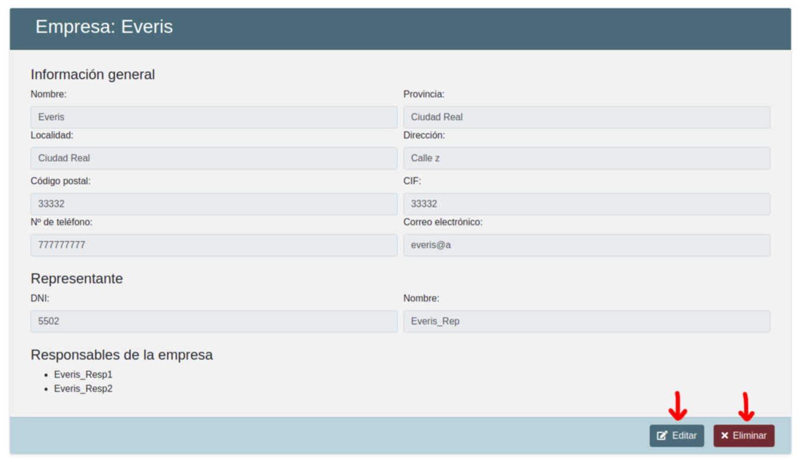
                        <br>
                    </p>
                    <h2>2. Generación de anexos</h2>
                    <h3>&nbsp;&nbsp;Anexos 0, 1 y 2</h3>
                    <p class="ml-5">
                        Ve a la sección "Cursos" en la parte izquierda de la pantalla. En la sección "Empresas", que contiene las empresas asignadas a un curso, haz click en "Descargar anexos", junto a la empresa cuyos anexos quieras descargar. Al hacer click en cualquiera de
                        ellos, se generará y descargará con los datos existentes sobre la empresa, el centro, el curso y los alumnos.
                        <br>
                        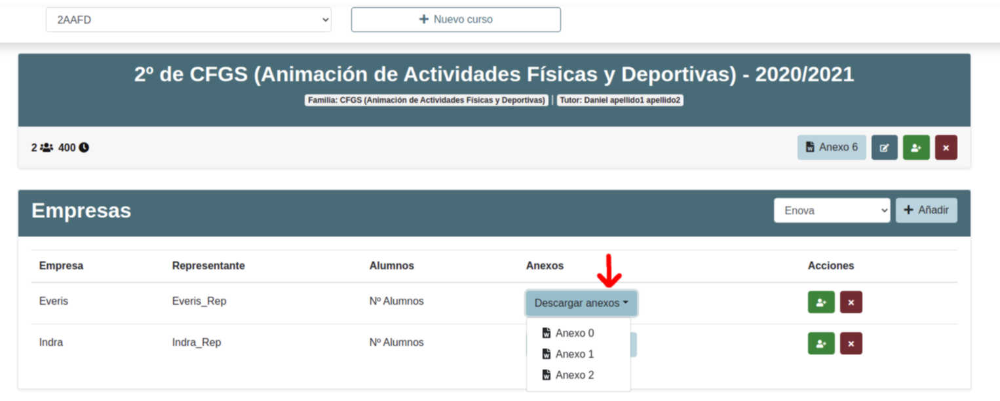
                    </p>
                    <h3>&nbsp;&nbsp;Anexos 3, 4, 5 y 7</h3>
                    <p class="ml-5">
                        Ve a la sección "Cursos", en la parte izquierda de la pantalla. Escoge el curso que desees en el desplegable de la parte superior. Ahora, haz click en el botón verde junto a la empresa que desees, como si fueras a añadir algún alumno. En la ventana que
                        aparece, junto a cada alumno, haz click en el botón "Descargar anexos" y elige el anexo que quieras descargar.
                        <br>
                        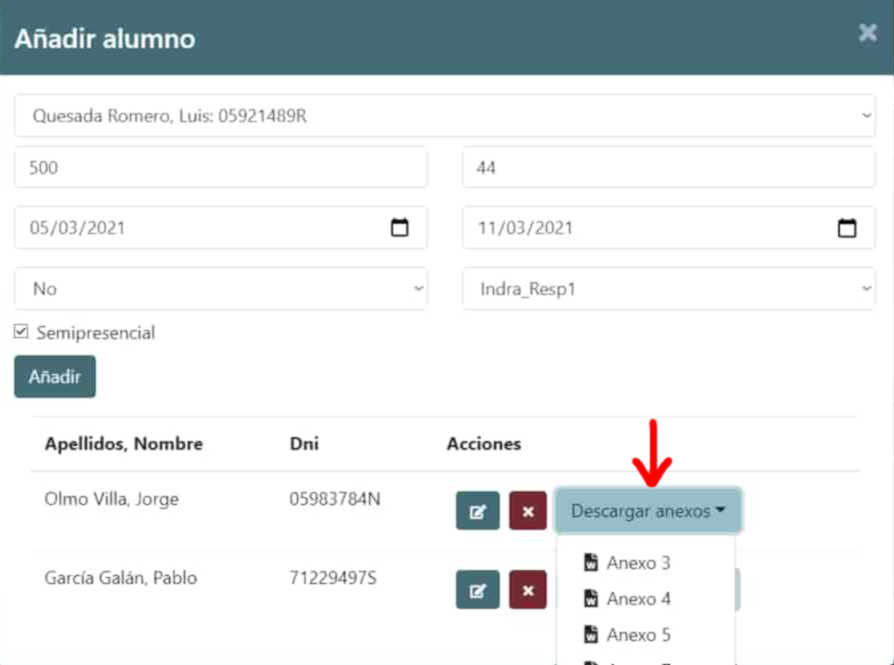
                    </p>
                    <h3>&nbsp;&nbsp;Anexo 6</h3>
                    <p>
                        En la sección "Cursos", una vez elegido el curso deseado, haz click en el botón "Anexo 6", bajo el nombre del curso.
                        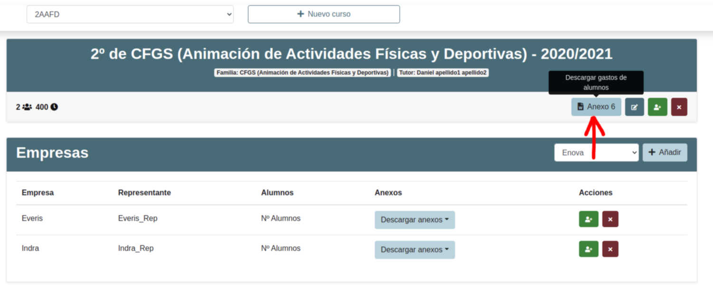
                    </p>
                </div>
            </div>
        </div>
    </div>
</main>